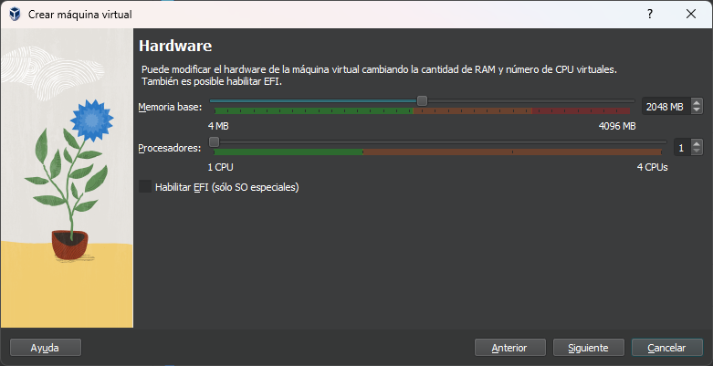
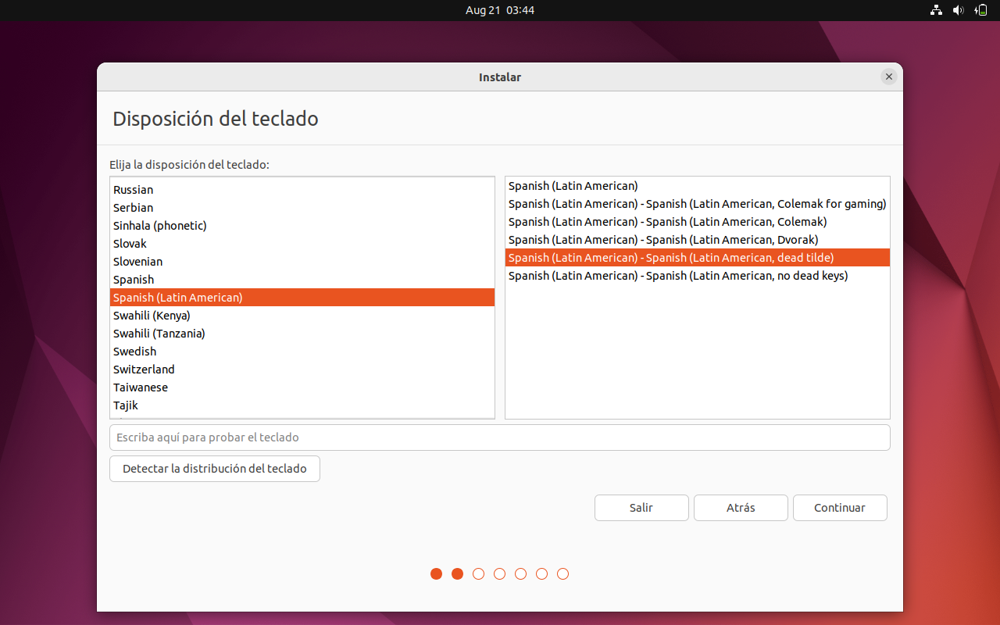
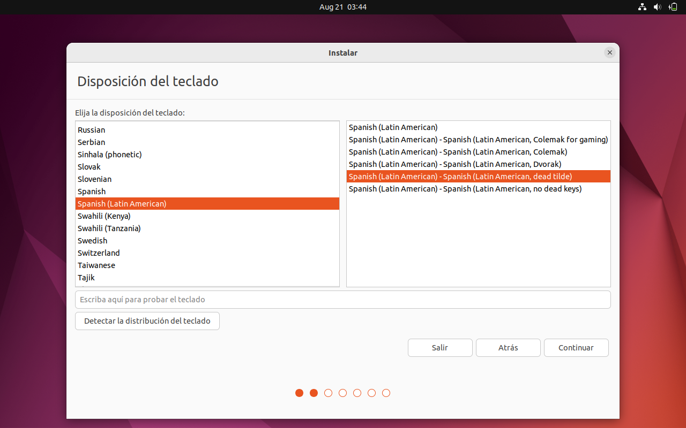
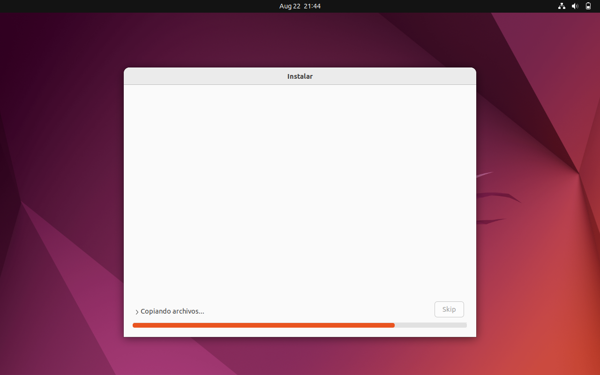
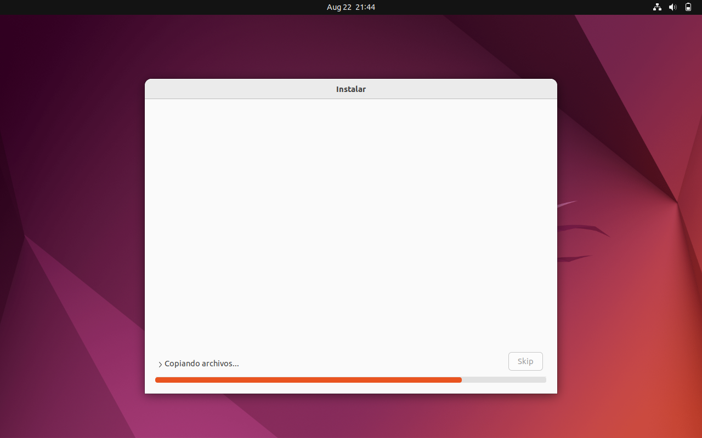

ESCRITORIO (DESKTOP).
Paso 1: (Abrir VirtualBox).
Comenzaremos abriendo VirtualBox, para asi seleccionar la opción de nuevo, y seleccionar nuestra ISO de DESKTOP que descargamos.
Paso 2:(Seleccionar ISO DE DESKTOP) .
Una vez seleccionada la opcion "Nuevo" se nos abrira una ventana en la cual seleccionaremos la ISO para asi agregarla.
Paso 3: (Seleccionar hizo para agregarla).
Se nos abrira a ventana de nuestros documentos donde nos mostrara las ISO que tengamos, en este caso seleccionaremos la ISO de DESKTOP.
Paso 4: (Omitir instalacion desatendida).
Marcamos la opcion de omitir instalacion desatendida y damos en siguiente.
Paso 5: (Memoria y procesadores).
Cambiaremos la memoria base y el numero de procesadores si asi lo deseamos, en este caso lo dejaremos como esta por defecto.

Paso 6: (Disco virtual).
Al igual que en la memoria, se puede aumentar, pero igualmente en este caso se dejaran como esta por defecto.
Paso 7: (Terminar).
Se nos mostrara una ventana en donde se describe las caracteristicas que escogimos, una vez teniendo todo como lo pusimos, daremos en la opcion de Terminar.
Paso 8: (Ventana de instalacion).
En esta pantalla no haremos nada, solo dejaremos que pase el tiempo marcado para que podamos continuar con el siguiente paso.
 Paso 9: (Logo de UBUNTU DESKTOP).
Dejaremos que finalice la animacion de carga.
Paso 10: (Idioma).
Al terminar el logo se nos mostrara una ventana donde seleccionaremos el idioma al igual que la instalacion.
Paso 11: (Especificar idioma para teclado).
Despues del paso anterior, nos saldra otra ventana de idioma, este sera el idioma del teclado, el cual debemos especificar muy bien, en este caso seleccionaremos el idioma "Español latinoamericano con tilde."

Paso 12: (SActualizaciones).
En esta ventana, haremos una instalacion normal, asi que seleccionamoms esa opcion y damos en continuar.
Paso 13: (Funcionalidades avanzadas).
Aqui seleccionaremos la opcion de funcionalidades avanzadas, para que se nos abra otra ventana y seleccionemos la segunda opcion (Utilizar LVM en la instalacion de Ubuntu).
Paso 14: (Seleccionar pais).
Simplemente deberemos poner el cursor y seleccionar el pais donde nos encontramos.
Paso 15: (Nombre y contraseña).
Pondremos un nombre, el nombre del equipo se genera automaticamente, el nombre de usuario tambien deberemos escribirlo, al igualque la contraseña, finalmente seleccionaremos la opcion de "Solicitar mi contraseña para iniciar sesion".
Paso 9: (Logo de UBUNTU DESKTOP).
Dejaremos que finalice la animacion de carga.
Paso 10: (Idioma).
Al terminar el logo se nos mostrara una ventana donde seleccionaremos el idioma al igual que la instalacion.
Paso 11: (Especificar idioma para teclado).
Despues del paso anterior, nos saldra otra ventana de idioma, este sera el idioma del teclado, el cual debemos especificar muy bien, en este caso seleccionaremos el idioma "Español latinoamericano con tilde."

Paso 12: (SActualizaciones).
En esta ventana, haremos una instalacion normal, asi que seleccionamoms esa opcion y damos en continuar.
Paso 13: (Funcionalidades avanzadas).
Aqui seleccionaremos la opcion de funcionalidades avanzadas, para que se nos abra otra ventana y seleccionemos la segunda opcion (Utilizar LVM en la instalacion de Ubuntu).
Paso 14: (Seleccionar pais).
Simplemente deberemos poner el cursor y seleccionar el pais donde nos encontramos.
Paso 15: (Nombre y contraseña).
Pondremos un nombre, el nombre del equipo se genera automaticamente, el nombre de usuario tambien deberemos escribirlo, al igualque la contraseña, finalmente seleccionaremos la opcion de "Solicitar mi contraseña para iniciar sesion".
 Paso 16: (Asi se veria lleno).
Asi es como se veria cuando se llena.
Paso 17: (Esperar la copia de archivos).
Tendremos que esperar a que se copien todos lo archivos.

Paso 18: (Reiniciar).
Al terminar la copia de los archivos, aparecera una venta, la cual nos dira que reiniciemos.
Paso 19: (Iniciar sesion).
En este apartado, deberemos iniciar sesion con la contraseña que ingresamos anteriormente.
Paso 20: (Llenado con la contraseña).
Asi se veria cuando llenamos nel espacio de la contraseña.
Paso 21: (Escritorio).
Una vez hecho los pasos anteriores, asi es como se veria el escritorio de ubuntu Desktop.
Paso 16: (Asi se veria lleno).
Asi es como se veria cuando se llena.
Paso 17: (Esperar la copia de archivos).
Tendremos que esperar a que se copien todos lo archivos.

Paso 18: (Reiniciar).
Al terminar la copia de los archivos, aparecera una venta, la cual nos dira que reiniciemos.
Paso 19: (Iniciar sesion).
En este apartado, deberemos iniciar sesion con la contraseña que ingresamos anteriormente.
Paso 20: (Llenado con la contraseña).
Asi se veria cuando llenamos nel espacio de la contraseña.
Paso 21: (Escritorio).
Una vez hecho los pasos anteriores, asi es como se veria el escritorio de ubuntu Desktop.